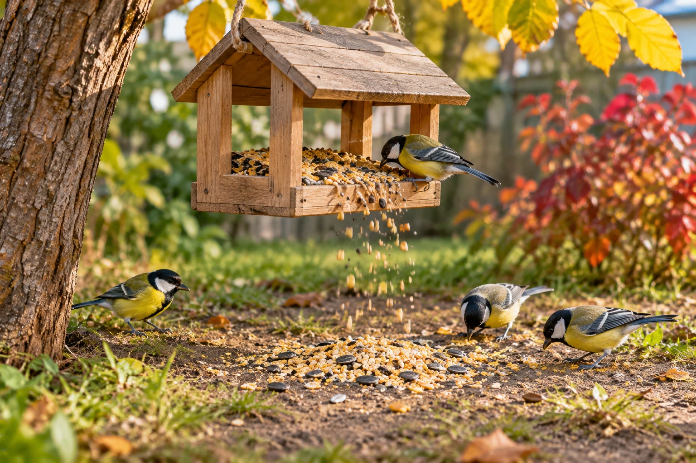

🐦 Чиста годівничка
Маленька історія — новий інструмент винахідника!
🎯 Ситуація

У дворі маленька синичка прилетіла до годівнички. Вітер підхопив зернятка, і вони посипалися на землю. «Хочу, щоб корм залишався пташкам, навіть коли вітер сильний», — каже Оленка.
❓ Ваше завдання
Уявіть ІКР: зернятка самі залишаються в годівничці, а пташки легко їх дістають. Що зміниться?
🧩 Спробуйте!
Оберіть дві ідеї, які наближають годівничку до ІКР. Перетягніть картки або натисніть на них.
🧺 Ваші ідеї: ще немає
✏️ Ваш винахід
Допишіть: «Ідеальна годівничка сама…». Намалюйте свій варіант.